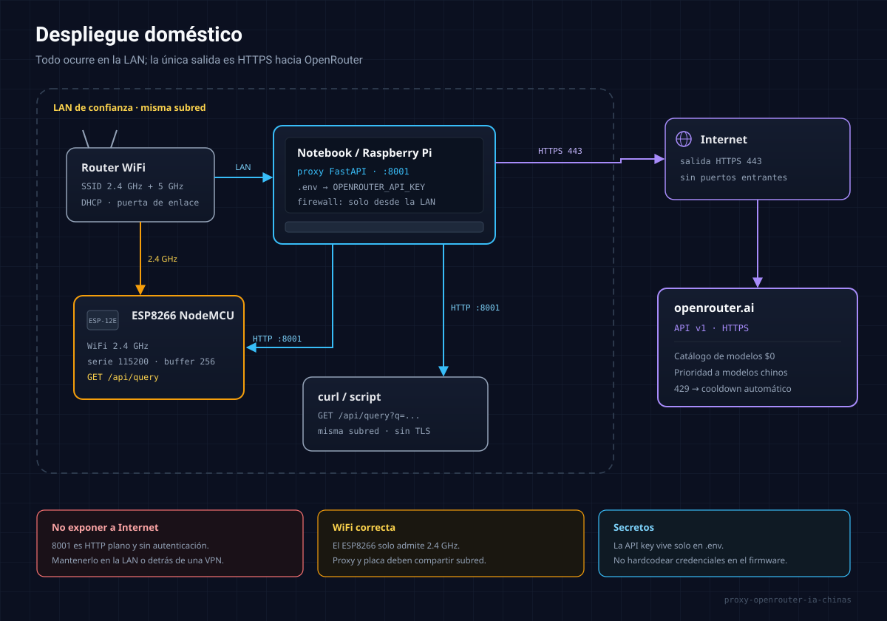

Un proxy.
Muchos modelos.
Una puerta de entrada minúscula a los modelos gratuitos de OpenRouter, con prioridad a los modelos chinos y failover automático. El ESP8266 solo hace un GET; el proxy resuelve el resto.

Qué es y por qué existe
El problema, el enfoque y el alcance real del proyecto.
Proxy OpenRouter IA Chinas es un servicio FastAPI local que reduce el catálogo de modelos gratuitos de OpenRouter a un único GET /api/query?q=..., con respuesta JSON de cuatro campos (ok, model, text, error). Prioriza proveedores chinos, aplica cooldown a los modelos que fallan y mantiene la API key fuera del dispositivo. Incluye un firmware para ESP8266 que solo hace HTTP plano a la LAN.
Está dirigido a prototipos con microcontroladores y a scripts que necesitan un contrato mínimo y estable frente a un catálogo volátil. No es un servidor de inferencia, no tiene autenticación de entrada, no persiste estado ni ofrece SLA, y no transmite streaming al cliente: acumula la respuesta y la devuelve completa. El failover cubre la creación del stream, no los errores que aparecen al abrirlo, deuda declarada en la documentación.
Los tropiezos salen de la bitácora y de las versiones tempranas. La evaluación usa seis criterios fijos, de 1 a 5, y no premia la espectacularidad: premia que el proyecto se pueda reproducir y entender.
La IA no cabe en un ESP8266. Pero puede pedirla.
El micro no necesita entender de tokens, modelos ni claves: solo necesita una URL que le devuelva texto útil.
El problema
Los modelos interesantes viven detrás de APIs con JSON, cabeceras y claves. Un ESP8266 tiene poca RAM y ninguna ganas de implementing TLS con un cliente HTTP completo. Además, los modelos gratuitos cambian de disponibilidad y devuelven 429 sin avisar.
La solución
Un proxy FastAPI mantiene el pool de modelos, elige primero los modelos chinos disponibles, rota ante errores y devuelve una respuesta compacta. El firmware solo llama a /api/query?q=... y muestra el texto.
Cómo funciona, paso a paso
Del pulsador al modelo, sin que el micro se entere de la complejidad.
El micro pregunta
El ESP8266 envía el texto a GET /api/query?q=... por HTTP. Sin SDK, sin claves y sin JSON elaborado.
El proxy elige
FastAPI consulta su pool de modelos $0, prioriza los modelos chinos y descarta los que están en cooldown.
Si falla, rota
Un 429 o un timeout no cortan la experiencia: el proxy pasa al siguiente candidato y registra el incidente.
La respuesta vuelve
El micro recibe un cuerpo corto y legible, listo para mostrar en pantalla o leer por serial.
Proxy OpenRouter IA Chinas · failover para un ESP8266
Recorrido por el proxy FastAPI: pool de modelos gratuitos, detección de proveedores chinos, cooldown por modelo, router con failover, streaming de OpenRouter y el cliente ESP8266 que consume el endpoint.
Proxy OpenRouter IA Chinas · failover para un ESP8266
Recorrido por el proxy FastAPI: pool de modelos gratuitos, detección de proveedores chinos, cooldown por modelo, router con failover, streaming de OpenRouter y el cliente ESP8266 que consume el endpoint.
Los fragmentos corresponden al código real del repositorio. No se muestran claves, tokens ni el contenido del .env; el firmware incluido usa valores de ejemplo para SSID, password e IP.
Un actor, muchos proveedores
El proxy concentra credenciales, selección y resiliencia; el firmware queda deliberadamente tonto.
Selección con criterio
El pool prioriza modelos chinos y gratuitos, pero mantiene alternativas para no depender de un solo proveedor.
Cooldown real
Cuando un modelo devuelve 429, se marca y se saca de rotación temporalmente. El siguiente request no vuelve a tropezar.
Superficie mínima
El micro nunca ve la API key ni el catálogo completo. Solo ve una URL y un texto.
Decisiones de ingeniería
Cada decisión está pensada para que el cliente más débil sea el que menos complejidad cargue.
Failover en cadena
Si el primer modelo falla, el proxy prueba el siguiente sin cambiar el contrato del cliente.
Cooldown de 429
Los modelos saturados descansan y vuelven solos cuando termina la ventana.
Clave fuera del micro
La credencial vive en el servidor. El ESP8266 no guarda secretos.
Contrato de un GET
Diseñado para clientes con poca RAM: sin OAuth, sin SDK y sin payloads grandes.
Pool configurable
Los modelos y prioridades se editan en configuración, no en el firmware.
Respuesta compacta
El texto se devuelve listo para pantalla o para el puerto serial.
El sistema, en dibujos
Los diagramas se mantienen en el repositorio y se actualizan con el código.


Con qué está construido
FastAPI y httpx del lado servidor; ArduinoJson y ESP8266WiFi del lado micro. El firmware es un cliente HTTP deliberadamente simple.
$ python3 -m venv .venv $ source .venv/bin/activate $ pip install -r requirements.txt $ export OPENROUTER_API_KEY=sk-or-... $ uvicorn app:app --host 0.0.0.0 --port 8001
Todo está escrito
Cada decisión, cada límite y cada comando están documentados en el repositorio. Sin folletos: lo que funciona se muestra, lo que no, también.
La guía completa
Instalación, configuración, firmware, contrato HTTP y límites.
Abrir documento DATASHEETManual de operación
Puesta en marcha, variables, endpoints, códigos de error y mantenimiento.
Abrir documento DEVELOPERGuía de código
Módulos, pool de modelos, cooldown, failover y cómo extenderlo.
Abrir documento REFERENCESReferencias
OpenRouter, FastAPI, ArduinoJson y documentación del ESP8266.
Abrir documentoLos tropiezos, documentados
Lo que no funcionó en las primeras versiones, con la corrección aplicada.
La ESP8266 no veía la red WiFi
La red disponible era de 5 GHz y el ESP8266 solo asocia 2.4 GHz, así que la placa fallaba tras 20 segundos de intentos. Se usó el SSID gemelo de 2.4 GHz en la misma subred y la restricción quedó escrita en el sketch y en la guía del cliente.
El JSON no entraba en el buffer de 8 KB
DynamicJsonDocument(8192) se quedaba corto con respuestas largas en UTF-8 y el sketch reportaba "No se pudo parsear JSON". Se mantuvo el buffer y se aceptaron respuestas moderadas; calcular la capacidad o filtrar max_chars en el servidor quedó pendiente.
El failover no cubre errores al abrir el stream
El router captura excepciones alrededor de la creación del generador, no de su iteración, de modo que un 429 inicial no dispara cooldown ni cambio de modelo. Está documentado como deuda funcional principal, sin corregir en esta fase.
Key ausente detectada tarde
El servicio arrancaba y todas las consultas fallaban con 401. run.sh ahora valida el prefijo sk-or-v1- antes de arrancar y server.py emite un WARNING, pero la comprobación es sintáctica y no verifica la clave contra OpenRouter.
Cómo se mide este proyecto
Seis criterios fijos, con la evidencia que respalda cada nota.
Lo que suelen preguntar
¿Qué es Proxy OpenRouter IA Chinas?
Un proxy FastAPI local que elige un modelo gratuito de OpenRouter, prioriza proveedores chinos y devuelve la respuesta en un JSON de cuatro campos consumible por un ESP8266.
¿Es un servicio listo para producción?
No. Corre en una LAN doméstica, no tiene autenticación de entrada, no persiste estado y depende de que existan modelos con pricing "0" en OpenRouter.
¿Cómo se despliega?
Se instala requirements, se define OPENROUTER_API_KEY en .env y se lanza run.sh en el puerto 8001; el firmware se compila con arduino-cli para esp8266:esp8266:nodemcuv2.
¿Qué se puede reutilizar?
El pool dinámico con filtro estricto de precio, la política de orden por proveedor chino y el contrato GET mínimo pensado para clientes con RAM y TLS limitados.
¿Te animás?
Usá esto como base y referencia para darle IA a un ESP8266 sin meterle HTTPS ni JSON pesado, con un solo GET. Este proyecto es la prueba de que se puede hacer con componentes reales.